| Home | All Classes | Main Classes | Annotated | Grouped Classes | Functions |
[Prev: Creating a Qt Application] [Home] [Next: The Designer Approach]
In this chapter we will explain how to create an application's main window and how to add actions (explained shortly), menus and toolbars. We will also demonstrate how some common actions, like cut and paste in a QTextEdit, can be performed automatically simply by making the appropriate signals and slots connections. We will build the richedit application to illustrate the necessary techniques.
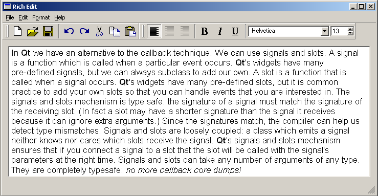
The Richedit Application
We begin by creating a project file. Start Qt Designer or if it is already running, close any existing projects and files. Click File|New to invoke the New File dialog. Click the 'C++ Project' icon, then click OK to invoke the Project Settings dialog. Click the ellipsis button to invoke the Save As dialog and navigate to where you want to put the new project. Use the Create New Folder toolbar button to create the 'richedit' directory if it doesn't exist. Make sure you're in the 'richedit' directory (double click it) and enter a file name of 'richedit.pro'. Click the Save button. The 'Project File' field of the Project Settings dialog will have the path and name of your new project; click OK to create the project.
If you're unfamiliar with Actions and Action Groups the sidebar provides the necessary introduction; otherwise skip ahead to "Designing the Main Window".
Actions and Action Groups
An action is an operation that the user initiates through the user interface, for example, saving a file or changing some text's font weight to bold.
We often want the user to be able to perform an action using a variety of means. For example, to save a file we might want the user to be able to press Ctrl+S, or to click the Save toolbar button or to click the File|Save menu option. Although the means of invoking the action are all different, the underlying operation is the same and we don't want to duplicate the code that performs the operation. In Qt we can create an action (a QAction object) which will call the appropriate function when the action is invoked. We can assign an accelerator, (e.g. Ctrl+S), to an action. We can also add an action to a menu item and to a toolbar button.
If the action has an on/off state, e.g. bold is on or off, when the user changes the state, for example by clicking a toolbar button, the state of everything associated with the action, e.g. menu items and toolbar buttons, are updated.
Some actions should operate together like radio buttons. For example, if we have left align, center align and right align actions, only one should be 'on' at any one time. An action group (a QActionGroup object) is used to group a set of actions together. If the action group's exclusive property is TRUE then only one of the actions in the group can be on at any one time. If the user changes the state of an action in an action group where exclusive is TRUE, everything associated with the actions in the action group, e.g. menu items and toolbar buttons, are updated.
Qt Designer can create actions and action groups visually, can assign accelerators to them, and can associate them with menu items and toolbar buttons.
We will use the main window wizard to build a main window. The wizard allows us to create actions and a menu bar and a toolbar through which the user can invoke the actions. We will also create our own actions, menus and toolbar. We will add some widgets to the toolbar and add a main widget to the main window. Finally we will connect signals to slots to take advantage of Qt's default functionality and minimize our coding.
Click File|New to invoke the New File dialog, click Mainwindow, then click OK. A new QMainWindow form will be created and the Mainwindow Wizard will pop up.
The Choose available menus and toolbars wizard page appears first. It presents three categories of default actions, File Actions, Edit Actions and Help Actions. For each category you can choose to have Qt Designer create menu items, toolbar buttons and signal/slots connections for the relevant actions. You can always add or delete actions, menu items, toolbar buttons and connections later.
We will accept the defaults for File Actions, i.e. have menu items, toolbar buttons and the relevant connections created. But for the Edit Actions we don't want any connections created since we'll be connecting the actions directly to the QTextEdit we'll create later, so uncheck the Edit Action's Create Slots and Connections checkbox. We won't have any Help Actions on the toolbar so uncheck the Help Action's Toolbar checkbox. Click Next to move on to the next wizard page.
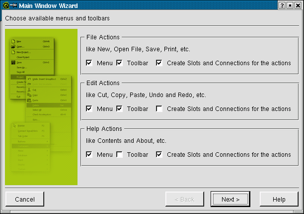
Main Window Wizard- Choosing menus and toolbars
The Setup Toolbar wizard page is used to populate a toolbar with actions from each of the default action categories. The Category combobox is used to select which set of actions you wish to work on. The Actions list box lists the actions available for the current category. The Toolbar listbox lists the toolbar buttons you want to create. The blue left and right arrow buttons are used to move actions into or out of the Toolbar list box. The blue up and down arrow buttons are used to move actions up and down within the Toolbar list box. Note that the '<Separator>' item in the Actions list box may be moved to the Toolbar list box as often as required and will cause a separator to appear in the finished toolbar.
Copy the New, Open and Save Actions to the Toolbar list box. Copy a <Separator> to the Toolbar list box. Change the Category to Edit and copy the Undo, Redo, Cut Copy and Paste actions to the Toolbar list box. Click Next and then click Finish.
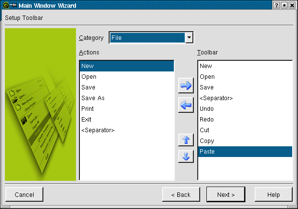
Main Window Wizard- Setting up the toolbar
If you preview the form (Ctrl+T) the File and Edit menus will be available and you'll be able to drag the toolbar either into an independent window of its own, or to dock it to the left, right, bottom or top of the window. The menus and toolbars are not functional yet but we will rectify this as we progress.
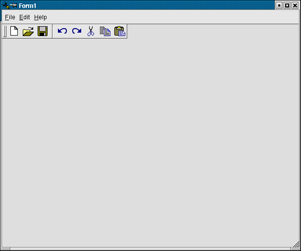
Previewing the Form
Click File|Save to save the form as richedit.ui.
Our application requires more menu items and toolbar buttons than the the defaults we created with the main window wizard. But before we create the menu items and toolbar buttons we will create the actions that they'll invoke. The Action Editor appears automatically when you create a main window. You can also access it through the Window menu (click Window|Action Editor).
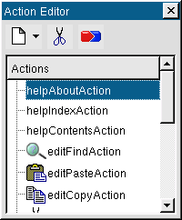
Action Editor
For the richedit application we need to create actions for indicating bold, italic and underlined font attributes, and to set text alignment.
Right click in the Action Editor where the actions are listed, then left click New Action. This will create a new action called 'Action' at the top of the list of actions. The Property Editor will change to show the default settings for the new action. We'll now go through all the properties we need to change.
Change the name of the action to 'boldAction'.
Since bold can only be on or off change the toggleAction property to True.
The iconSet property is used to set an icon which will appear to the left of the action's name in any menu you associate the action with. The iconSet is also used for the toolbar button if you associate the action with a toolbar. Click the ellipsis button (...) to invoke the Choose an Image dialog. The ellipsis button appears when you click in the Value part of the Properties list by a pixmap or iconSet property. The pixmap we require is not in the default collection. Click the Add button and a file dialog will appear. The icons we require are in the Qt examples directory, qt/examples/textedit/. Navigate to the textedit directory and select the textbold.xpm file and then click Open. Click the new textbold icon in the pixmap collection then click OK.
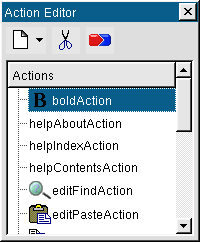
Properties of Bold Action
Change the text property to 'bold'. This automatically changes the menuText, toolTip and statusTip properties.
Change the menu text to '&Bold'. If we choose to associate this action with a menu item then this property is used; otherwise it is ignored.
Change the accel property to 'CTRL+B'. This will associate the Ctrl+B keyboard accelerator with this action.
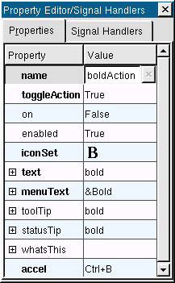
Properties for the Bold Action
Note that at this point the only way to invoke this action is to use the keyboard accelerator (Ctrl+B), because we have not yet associated the action with a menu item or with a toolbar button.
We need to add two more actions, italic and underline. For each one right click the Action Editor and click New Action. Then repeat the steps listed above to change each action's properties:
For the italic action change its name to 'italicAction' and ensure its toggleAction property is True. The iconSet is in the textedit directory and is called textitalic.xpm; add its pixmap in the same way that we added the bold pixmap. (For example, click the ellipsis (...), click Add, navigate to the textedit directory and click the textitalic.xpm pixmap and then click Open. Then click the textitalic icon in the pixmap collection and click OK). Change the action's text to 'italic', its menuText to '&Italic' and its accel to 'CTRL+I'.
For the underline action change its name to 'underlineAction' and set its toggleAction property to True. The iconSet is in the same directory and is called textunder.xpm; add it in the same way as the previous pixmaps. Change its text to 'underline', its menuText to '&Underline' and its accel to 'CTRL+U'.
It is perfectly possible to have bold, italic and underline all active at once. But for alignment, i.e. left align, right align and centered, it only makes sense for one of them to be active at any one time. Because we need the alignment actions to operate in sync with one another we must create an Action Group which will automatically manage the behaviour of the actions it contains in the way we require.
Right click the Action Editor then left click New Action Group. Change the action group's name in the Property Editor to 'alignActionGroup', and change its text to 'align'. The 'exclusive' property's default is True. This ensures that only one action within the action group can be 'on' at any one time which is the behaviour we require.
We create the actions within the action group in almost the same way as before. The only difference is that we must right click the alignActionGroup (rather than an Action) and then left click New Action to create a new action within the action group. We will create three new actions within the alignActionGroup:
Create a new action within the alignActionGroup action group. Change the name of this action to 'leftAlignAction' and ensure its toggleAction property is True. Use the iconSet in the textedit directory called textleft.xpm, adding the pixmap to the pixmap collection in the same way as we added the textbold pixmap earlier. Change its text to 'left', its menuText to '&Left' and its accel to 'CTRL+L'.
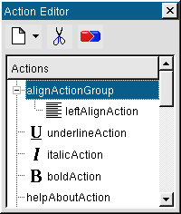
Creating an Action group
Create another new action within alignActionGroup. Change this action's name to 'rightAlignAction' and set its toggleAction property to True. Set its iconSet to textright.xpm using the pixmap collection as before. Change its text to 'right', its menuText to '&Right' and its accel to 'CTRL+R'.
Create a third action within alignActionGroup. Change its name to 'centerAlignAction' and make its toggleAction property True. Change its iconSet to textcenter.xpm. Change its text to 'center' and its menuText to '&Center'. We won't set an accelerator for this action.
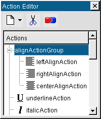
Align Action Group
Note that the toolTip and statusTip properties were inherited from the action group; you may wish to change these to be specific to the actions concerned.
We have some actions that we don't intend providing for this first release, for example, the editFindAction and the filePrintAction. Click editFindAction and then click the Delete Action toolbar button. Delete the filePrintAction in the same way. Action Groups (including any actions they contain) can also be deleted with the Delete Action toolbar button.
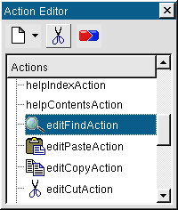
Deleting editFindAction
All the actions we require are now in place and we are ready to create a new toolbar and add some of our actions to it. Right click on the right hand side of the toolbar area, or on the form, then left click Add Toolbar. The new toolbar is empty and is visible only by its toolbar handle. (Toolbar handle's are usually represented as a gray area containing either two thick vertical lines or with many small pits).
Toolbar Handle
We'll add the new actions we've just created. Drag the alignActionGroup, (not any action it contains), to the new toolbar and drop it on the toolbar handle to the right of the vertical lines. The three alignment actions will be added to the toolbar.
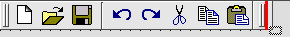
Dragging the Action Group to the Toolbar
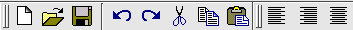
Populating the Toolbar with an Action Group
The bold, italic and underline actions do not belong to an action group, and must be dragged to the toolbar individually. Drag the bold action to the toolbar: when the mouse is over the toolbar a thick red line will appear indicating the position at which the toolbar button will be inserted; drop the bold action on the toolbar. Drag the italic and underline actions to the toolbar and drop them next to the bold button. Separate the alignment toolbar buttons from the font related buttons by right clicking the centered toolbar button and clicking Insert Separator.
Toolbar buttons and separators (usually represented as indented vertical gray lines), can be dragged and dropped into new positions in the toolbar at any time. Separators can be inserted by right clicking a toolbar button and clicking Insert Separator. Toolbar buttons and separators can be deleted by right clicking them and clicking Delete Item. Toolbars can be deleted by right clicking their toolbar handle and clicking Delete Toolbar.
If you preview the application you'll find that both the original and new toolbar can be dragged to different docking points or dragged out of the application as independent tool windows.
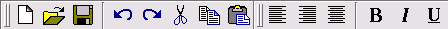
Toolbar with all the Actions Added
We want our users to be able to choose the font and font size from the toolbar. To achieve this we'll create a font combobox and a font size spinbox and place them in the formatting toolbar we created in the previous section.
Click Qt Designer's ComboBox toolbar button and click the last (right-most) toolbar button in the application's new toolbar. Change the combobox's name to 'fontComboBox'. Click the SpinBox toolbar button and click the combobox we've just added to insert the spinbox next to it. Change the spinbox's minValue property to 6, its value property to 10 and its suffix to a space followed by 'pt'. Insert a separator to the left of the combobox.
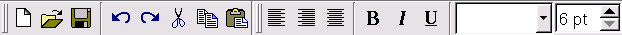
Adding Widgets to the Toolbar
Although you can put any widget into a toolbar we recommend that widgets which can be associated with an action should not be added to the toolbar directly. For these widgets, i.e. menu items, toolbar buttons and lists of items, you should create an action (drop down action for a list of items), associate the action with the widget, and add the action to the toolbar. Widgets that can sensibly be inserted directly into a toolbar are ComboBoxes, SpinBoxes and Line Edits.
We'll now add the actions we added to the new toolbar to a new menu and modify the existing menus slightly.
Right click our application's menu bar and click Add Menu Item. A new menu item called 'Menu' will appear. Right click this menu item and click Rename Item. Change its name to 'F&ormat'.
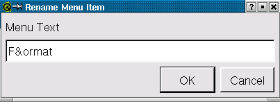
Format Menu
Click the menu item and a red bar will appear beneath it -- this is the empty menu. Drag the alignActionGroup from the Action Editor to the Format menu item and drop the action group on the menu. (The menu's red bar will appear and a thick red line will be drawn where the new menu items will appear -- drop when the red line is in the position you require.) Now if you click the Format menu item the three alignment actions will be displayed. Just like the toolbar we must add the bold, italic and underline actions individually. Drag the bold action to the Format menu and move the mouse so that the red line is positioned at the bottom of the menu, then drop the action. Repeat this process for the italic and underline actions.
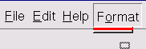
Draggin the Action Group to the Menu Bar
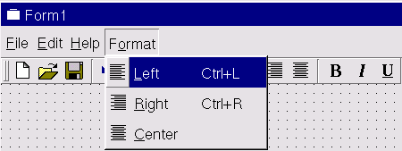
Dragging and Dropping Align Action Group to the Format Menu
We'll now deal with the separators in the menus. Firstly we'll add a separator in the Format menu and then we'll remove some redundant separators from the other menus. Click the Format menu and right click the bold item towards the top of the highlighted area; click Insert Separator. Note that you could also right click the center align item towards the bottom of the highlighted area to insert the separator between the align actions and the font actions. ###Click the File menu and right click one of the separators above the Exit action; click Delete Item. Click the Edit menu, right click the separator at the very bottom of the menu and click Delete Item. Delete Item can be used to delete separators, menu items and menus.###
Click the Format menu and drag it to the left of the Help menu, then drop the Format menu. (A thick red bar will appear to indicate the insertion postion.) Both menus and menu items may be dragged and dropped to different positions in the same way.
Preview the application and try clicking the alignment and font style toolbar buttons and menu items. Qt will automatically keep the state of the menu items and the toolbar buttons synchronized.
Our application is a rich text editor, but so far there has been nowhere for the user to edit text. We'll add a QTextEdit widget and use Qt's signals and slots mechanism to minimize the code we have to write to make it functional.
Click Qt Designer's Richtext Editor (Text Edit) toolbar button and click in the center of the form. Click the form, then click the Lay Out Horizontally toolbar button. We're now ready to make the connections we need; but first we will do some renaming to make things easier to understand. Click on the Text Edit widget and change its name property to 'textEdit'. Change the textFormat property to 'RichText'. Change the name of the form to 'EditorForm' and its caption to 'Rich Edit'.
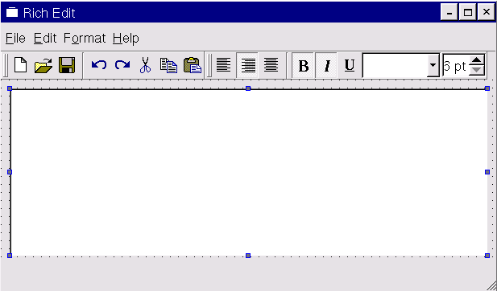
Adding Rich Text Edit Widget
The QTextEdit widget contains built-in functionality for cut and paste and various other editing functions. By connecting the appropriate signals to our textEdit we can take advantage of this functionality without the need to write any code.
Click the underlineAction in the Action Editor, then click the Connect button in the Action Editor toolbar. The Edit Connections dialog will appear. Click the toggled() signal. Since we wish to connect this signal to the text edit widget, drop down the Slots combobox and click textEdit. The text edit's slots that can respond to a toggled signal will appear in the right hand list box. Click the setUnderline() setUnderline() slot, then click OK.
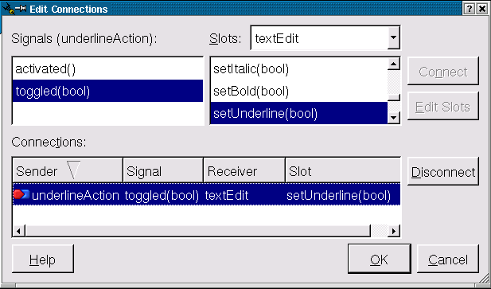
Connecting the Underline Action
Connect up the bold and italic actions in the same way. (For example, click the bold action and click Connect. Click the toggled() signal, change the Slots combobox item to textEdit and click the Click OK.) If you preview the form you'll find that you can enter text and that choosing bold, italic or underline will work.
The cut, copy, paste, undo and redo actions are connected in the same way as the font attributes. For example, click the editPasteAction action and click Connect. Click the activated() signal, change the Slots combobox item to textEdit and click the the connection. Connect the cut, copy, undo and redo actions in the same way. (For example, click the editCopyAction action, click Connect, click the signal, change the Slots combobox item to textEdit, click the copy() copy() slot then click OK.) Then the cut, copy, paste, undo and redo actions will all work in preview mode.
We need to create a slot to receive signals from alignment actions and set the textEdit widget's alignment state accordingly. One approach would be to connect each individual alignment action to our slot, but because the align actions are in a group we will connect the alignActionGroup to our slot and determine which alignment the user chose from the QAction pointer that is passed.
Create a new slot with the signature changeAlignment(QAction *align). (Click Edit|Slots, click New Slot, enter the slot's signature and click OK.) Click alignActionGroup in the Action Editor, then click Connect. Connect the selected(QAction*) signal to our change alignment slot, then click OK.
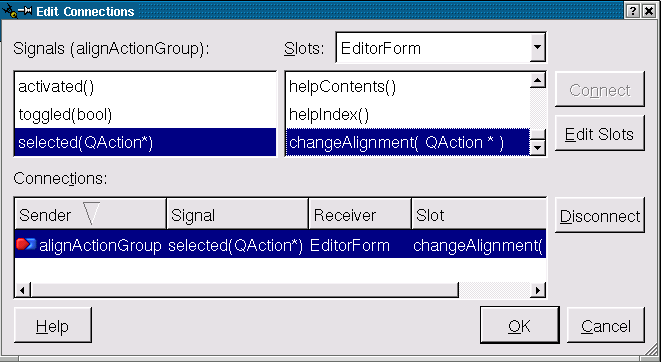
Connecting the Alignment Actions
We'll have to write the code to set the alignment ourselves; we'll cover this in Aligning Text.
We'll start by dealing with font size since it's easiest. Click the Connect Signals/Slots toolbar button then click the spinbox and drag to the text edit widget; release on the text edit. Click the signal and then click the textEdit's setPointSize(int) slot. Click OK and font sizes are done. (Since font sizes are handled purely through built-in signals and slots they work in preview mode.)
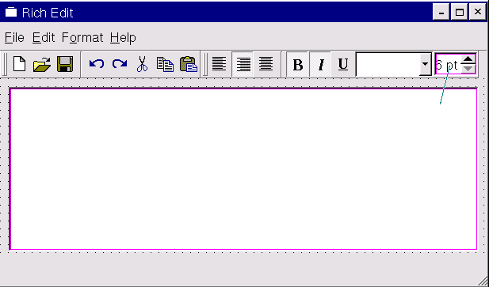
Connecting the Font Sizes
Connect the fontComboBox's activated() signal to the textEdit's setFamily() slot. This connection will handle updating the textEdit's font family with the user's choice of font. Note that when you invoke the Edit Connections dialog the first signal that is highlighted is activated(int). Since the setFamily() setFamily() slot takes a QString argument it does not appear in the list of slots. Only those slots which are compatible with the highlighted signal are shown, in this case, slots which take no argument or which take an integer argument. Click the activated(const QString&) signal and the list of slots will change to those which take no argument or which take a QString argument; the list will now include setFamily() since this takes a QString argument. We will have to populate the combobox with the font names for the user to choose from in code. (See the in Changing Fonts.) It's a good idea to connect the fontComboBox's the textEdit's will ensure that after the user has changed font the focus will return to the text.
The richedit application is nearly complete. We will have to write code to handle text alignment, font family and file loading and saving. We will also write the code for application exit to deal correctly with any unsaved changes.
We've built the user interface through Qt Designer and connected those slots that provided sufficient default functionality. The last steps are to code the slots that require customization and then to create main.cpp so that we can compile and build our application.
When the user starts the richedit application we want the focus to be in the textEdit widget so we need to create an init() function with one line of code to achieve this. (All the code snippets are from qt/tools/designer/examples/richedit/richedit.ui.h.)
void EditorForm::init()
{
textEdit->setFocus();
}
We'll add more to this function later.
The code for these tasks is straightforward. When the user clicks File|New we check to see if there are unsaved changes in the existing text and give them the opportunity to save, continue without saving or cancel the operation. When the user opts to open an existing file or exit the application we perform the same check and offer them the same choices.
void EditorForm::fileNew()
{
if ( saveAndContinue( "New" ) )
textEdit->clear();
}
The fileNew() function clears the text and the filename.
void EditorForm::fileOpen()
{
if ( saveAndContinue( "Open" ) ) {
QString fn( QFileDialog::getOpenFileName(
QString::null,
"Rich Text Files (*.htm*)", this ) );
if ( !fn.isEmpty() ) {
fileName = fn;
QFile file( fileName );
if ( file.open( IO_ReadOnly ) ) {
QTextStream ts( &file );
textEdit->setText( ts.read() );
}
}
}
}
The fileOpen() function asks the user to choose a file using QFileDialog::getOpenFileName(). If they choose a file we set the fileName member to its name, open it and read its contents directly into the text edit via a text stream.
void EditorForm::fileSave()
{
if ( fileName.isEmpty() ) {
fileSaveAs();
} else {
QFile f( fileName );
if ( f.open( IO_WriteOnly ) ) {
QTextStream ts( &f );
ts << textEdit->text();
textEdit->setModified( FALSE );
}
}
}
If there is no current file name we call fileSaveAs() which will prompt for a file name and if a file name is given calls fileSave(). If we have a file name we open a file and write the text from the text edit into the file via a text stream. We also set the text edit's modified property to FALSE.
void EditorForm::fileSaveAs()
{
QString fn = QFileDialog::getSaveFileName(
"", "Rich Text Files (*.htm*)", this );
if ( !fn.isEmpty() ) {
fileName = fn;
fileSave();
}
}
The fileSaveAs function prompts the user for a file name and if they give a file name, saves the text to the file by calling fileSave().
void EditorForm::fileExit()
{
if ( saveAndContinue( "Exit" ) )
qApp->exit();
}
When we exit the application we must perform the same check for unsaved changes as we've done in the preceding functions, so we've included the fileExit() function's code here.
int EditorForm::saveAndContinue(const QString & action)
{
int continueAction = 1;
if ( textEdit->isModified() ) {
switch( QMessageBox::information(
this, "Rich Edit",
"The document contains unsaved changes.\n"
"Do you want to save the changes?",
"&Save", "&Don't Save", "&Cancel " + action,
0, // Enter == button 0
2 ) ) { // Escape == button 2
case 0: // Save; continue
fileSave();
break;
case 1: // Do not save; continue
break;
case 2: // Cancel
continueAction = 0;
break;
}
}
return continueAction;
}
The saveAndContinue() function is included for completeness.
void EditorForm::changeAlignment(QAction * align)
{
if ( align == leftAlignAction )
textEdit->setAlignment( Qt::AlignLeft );
else if ( align == rightAlignAction )
textEdit->setAlignment( Qt::AlignRight );
else if ( align == centerAlignAction )
textEdit->setAlignment( Qt::AlignCenter );
}
We compare the chosen alignment action's pointer to the the pointers stored in the form and if we get a match set the appropriate alignment in the textEdit widget.
We've already connected the fontComboBox's activated() signal to the textEdit's setFamily() slot so we just have to populate the combobox with the font names when we call init().
void EditorForm::init()
{
textEdit->setFocus();
QFontDatabase fonts;
fontComboBox->insertStringList( fonts.families() );
QString font = textEdit->family();
font = font.lower();
for ( int i = 0 ; i < fontComboBox->count(); i++ ) {
if ( font == fontComboBox->text( i ) ) {
fontComboBox->setCurrentItem( i );
break;
}
}
}
The first line sets the focus as we've already mentioned. We then create a QFontDatabase object and insert its list of font families into the fontComboBox. Finally we set the fontComboBox's current item to the textEdit's current font.
With all the connections and code in place we are now ready to make our application run. Click on the Source tab of the Object Hierarchy window and click on the Includes (in Implementation) item. We need to include the files that our source code depends on. Right click the Includes item and click New. Type in <qapplication.h> for fileExit()'s exit() call. In the same way add <qmessagebox.h> for saveAndContinue()'s message box, <qfiledialog.h> for the fileOpen() and fileSaveAs() functions, and <qfontdatabase.h> for the QFontDatabase class in init().
We referred to a member variable, fileName, in our source code so we must add it to the form. Click the Source tab, right click the Class Variables item, click New from the pop up menu, then enter 'QString fileName;'.
The simplest way to create a new source file is by clicking File|New to invoke the 'New File' dialog, then click 'C++ Source' or 'C++ Header' as appropriate, then click OK. A new empty source window will appear. Click File|Save to invoke the Save As dialog, enter 'main.cpp', then click Save. Enter the following code in the main.cpp C++ editor window:
#include <qapplication.h>
#include "richedit.h"
int main( int argc, char *argv[] )
{
QApplication app( argc, argv );
EditorForm richeditForm;
app.setMainWidget( &richeditForm );
richeditForm.show();
return app.exec();
}
All that's left to do is to generate the Makefile, compile and run. The Makefile is created with qmake: qmake -o Makefile richedit.pro.
The richedit application demonstrates how easy it is to create a Qt application's main window with menus and dockable toolbars. A great deal of functionality was obtained by connecting the appropriate built-in signals and slots. The remaining functionality was achieved by connecting built-in signals to our own custom slots. We could continue developing the application, for example updating the fontComboBox, the font size spinbox and the actions with the font attributes as the user moves the cursor through their text. But our objective has been to demonstrate the creation of a main window with actions, menus and toolbars so we must stop at this point and leave further development and experimentation to you.
[Prev: Creating a Qt Application] [Home] [Next: The Designer Approach]
| Copyright © 2002 Trolltech | Trademarks | Qt version 3.0.5
|